Metadata Management
In OneStream, metadata configuration refers to the configuration of your dimensions and members. It’s hard to overstate how important metadata design is – it determines what intersections are valid for storage in your cube and is the core of your OneStream application. Well-designed metadata structures ensure data quality and make everything – from maintenance to reporting – simpler and more intuitive.
That said, this book is intended primarily for admins maintaining existing applications rather than consultants and partners handling the initial build. If you’d like to read more on what constitutes good metadata design, and how to build your extensibility from scratch, refer to the OneStream Foundation Handbook, specifically Chapter 3 on Design.
If you’re reading this chapter, your metadata structures are more than likely already in place and (hopefully) relatively stable. So, this chapter serves as a reference for admins updating or adding new metadata members, creating new member structures, or modifying cube settings. Some of the main topics we discuss are:
Data Units and the importance of extensibility.
How different settings interact.
Common mistakes when configuring members.
Process recommendations and case studies on how to handle metadata updates.
Metadata Management
Data Units and the Importance of Extensibility
Just because the design is done, you can still make mistakes with metadata changes that impact application performance. This section serves as a reminder of the important foundational topics to consider while maintaining your application (taken largely from the OneStream Foundation Handbook).
Metadata Management › Data Units and the Importance of Extensibility
Data Unit Definition
You often hear the term “in-memory,” but what does it mean, and why is it important? Analytic applications are tasked with processing and enriching large volumes of source data with the expectation the data will be turned into information that can quickly and reliably be analyzed by users. The OneStream financial analytic engine delivers information to users by keeping blocks of data (Data Units) in-memory and making them available – through fast access – to end users.
Here are the dimensions behind a Data Unit cube. These dimensions define each Data Unit.
Cube
Entity
Parent
Consolidation
Scenario
Time
These six dimensions define the Data Unit; the other twelve dimensions are part of the data unit.
The Data Unit consists of the stored data records for the above combination of dimensional intersections. Only base records of the 12 dimensions are stored in the database. Parent members of dimensions within the Data Unit are calculated only in-memory, and do not exist in the database.
This is not necessarily true for any dimension outside the Data Unit. For example, the entity parent’s data is stored. When you reference any combination of these dimensions, a “Data Unit” is created in the server’s memory. The server calculates parent members of Account, IC, Flow, and User-Defined – dynamically – and generates a small cube of this data. The greater the size of the Data Unit, the larger the strain placed on the system.
The combination of these six values represents a storage key/cluster for a group of related data cells. The best way to visualize this is to think of how it would be presented in Excel. The storage cluster represents the Excel file name or bucket (Cube, Entity, Parent, Consolidation, Scenario, and Time), and each row of the spreadsheet contains the Data Unit’s stored detailed intersections (View, Account, Flow, Origin, IC, UD1-8).
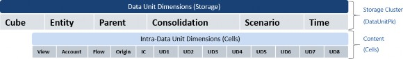
Figure 4.1
Notice here the dimensions that define the Data Unit are what we would expect to be dense dimensions. Dense dimensions are populated at, or close to, 100%. We would expect one would load data to every entity or close to it. The dimensions that are part of the Data Unit are typically what we would call sparse dimensions. Not only are they not all commonly used for every intersection, but combinations of these dimensions create gaps. You could use all the products for the Inventory Account, but products for the Deferred Tax Asset do not make sense.
Data Unit performance is driven by populated intersections, not intersections. If you have five billion combinations and only load a few thousand base records, the performance should be extremely fast.
| Note: Since the Entity defines the data unit, you need to consider dimension changes by Entity. |
Metadata Management › Data Units and the Importance of Extensibility
Stored versus Derived Data
In-memory data represents the cells of information that users have imported, inputted, and/or calculated as stored information. As this stored information is changed and written to the relational database store, the in-memory version of the data is refreshed and synchronized across all application servers that are in use to deliver information to the users who are working with the data.
It is very important to understand that the stored data that is loaded into memory only represents a fraction of the potential cells that the OneStream financial analytic engine can deliver to the end user. This means that many of the cells that a user requests are derived at the time they are requested using Calc-On-The-Fly-Aggregation. This is a critical concept that must be understood when designing OneStream analytic applications. Without the combination of in-memory data – combined with Calc-On-The-Fly-Aggregation – it would be impossible for a financial analytic application to perform.
Multi-dimensional applications are based on combinations of metadata structures called dimensions. The combination of dimensions is referred to as a cube. The potential number of cells in any given cube is the factorial of all the members in each dimension (200 Entities * 1,000 Accounts * 100 Cost Centers = 20 million cells).
As you can see, factorial math is a powerful force, and a tiny three-dimensional model can quickly reach 20 million cells. A standard cube in OneStream contains 18 dimensions, which means even a cube with a small number of members in each dimension will potentially reach billions or trillions of cells. With this potential volume of data, it is not possible to store all combinations of cells and achieve the performance levels that users expect from an analytic application. Consequently, the OneStream financial analytic engine uses a combination of stored and in-memory cells to deliver information.
Metadata Management › Data Units and the Importance of Extensibility
Usage
With this understanding of the Data Unit storage key and content structure, we can gain some insight into how the OneStream in-memory analytic engine works with blocks of data (Data Units). Many of us have encountered a massive spreadsheet (e.g., large .xlsx files with formulas and more than a million rows in the spreadsheet), and just opening the spreadsheet on a local computer takes a long time. In addition, you typically see formulas and recalculations slow down dramatically. A typical OneStream application contains thousands of Data Units that must be managed (Create, Update, Delete, Read) within the computational resource constraints of the servers running the application and the physics boundaries of factorial math.
The more dimensions that are used within a OneStream application, the easier it is to create large Data Units when parents are consolidated or aggregated. Consider that when this Data Unit is loaded into memory to create the multi-dimensional view of the data, there is a tremendous amount of processing that needs to happen. When we look at data in a report, we can see that it uses ‘by’ dimensions. Accounts ‘by’ Cost Center ‘by’ Location ‘by’ and so on… Each of those subtotals by each dimension is calculated using a complex proprietary process. Each added dimension and increase of data volume yields a model that will impact performance.
Another concern is that one of the easiest ways to create a data explosion that results in large parent Data Units is to create a model that has a content cell dimension (intra-Data Unit dimension) that is unique to the entity at the base level. For example, if a customer dimension is used, and customers are unique for each entity in the Data Unit storage key, then each parent entity that is consolidated or aggregated will have all unique customer data below the parent in its Data Unit. This type of design always results in large Data Units and usually means that the wrong dimension is being used as the entity that controls the storage block.
Metadata Management › Data Units and the Importance of Extensibility › Usage
Data Unit Explosion
Multi-dimensional analytic models are based on the combinations of member values in structures called dimensions. In OneStream, these structures are called cubes and cubes contain many Data Units which hold the detailed cells that result from the intersection of members in the dimensions that belong to the cube. (Think of cubes as an outline structure that defines the dimension structures to combine).
What is Data Unit explosion, and why should a OneStream administrator care about this phenomenon? Data Unit explosion describes a situation where a high number of potential cells in a cube become populated. You are thinking to yourself, the main reason that we are creating a cube is to fill it with data. However, you must always be respectful of the power of factorial math. As soon as you design a cube that utilizes multiple members in two or three customer dimensions, the potential number of cell combinations that could contain data within a given Data Unit will easily hit the billions, and it is not uncommon to see potential cell counts in the trillions.
Metadata Management › Data Units and the Importance of Extensibility › Usage › Data Unit Explosion
Example: Simple Five Dimension Cube
100 Accounts
100 Flow Members
100 UD1 Members
100 UD2 Members
100 UD3 Members
10 billion Potential Cells Per Data Unit (Factorial: 100 x 100 x 100 x 100 x 100)
The simple example above demonstrates how easy it is to create a substantial number of potential cells in each Data Unit. This example only combines five dimensions with 100 members each, and the potential cell count for each Data Unit in the cube is ten billion cells.
Also, remember that each cube holds many Data Units, so the overall model always hits trillions of potential cells when you add up all the potential cells across all the Data Units. Hopefully, this tiny cube structure demonstrates just how quickly potential cells add up because of factorial math.
Having many potential cells is not a problem; in fact, every practical OneStream model has many potential cells in each Data Unit. The OneStream analytic engine is built to handle very large models, and it is very efficient at finding the cells within a model that have data. The ratio of cells that have data to potential cells in the Data Unit is used to calculate the data density ratio (stored cells / potential cells). In most cases, the ratio of cells containing data to potential cells is low.
Because of this fact, the OneStream engine must be exceptionally good at finding cells that have data with a vast population of potential cells (spare data filtering).
On the other hand, Data Unit explosion refers to the situation where many potential cells are loaded with data. This always results in a model performance problem. Why? Is the OneStream engine not able to scale? The answer is physics limitations. OneStream supports the largest possible model configurations in the analytic software market (18 dimensions per Data Unit), but at a certain point, data cell volume will overcome the performance capabilities of the fastest multi-thread CPUs and algorithms. Therefore, it is important to understand how model design and data density impact the performance of your design.
Now that we have a foundational understanding of Data Unit explosion, let us examine the root causes of this phenomenon. There are three primary causes of Data Unit explosion.
1. An incorrect Dimension selected as the Entity dimension, resulting in too many dimension combinations within the intra-dimension members. This situation usually results in many potential cells in a single Data Unit that is then directly loaded from a source system, which results in excessive data cell population and poor performance.
An example might be putting a dense dimension – like Product – in the Entity dimension.
2. Formula spray is another cause of data explosion. This situation occurs when a rule writer erroneously creates a looping construct that iterates many potential cells in one or more Data Units and populates the cells with data, creating high data density. This type of data explosion is kept to a minimum by the OneStream engine due to formula expression constraints, but it is still a potential problem in situations where large allocation rules are being used. Allocation rules tend to spray data to many cells; in many circumstances, they spray insignificant “Near Zero” values to many cells.
Please take the time to define all dimensions in rules, as undefined dimensions could write to all members.
3. Entity-To-UDx Distinct relationships are another cause of data explosion at parent Data Units. If any UD member is the only value for a single base entity, then there is no collapsing of data rows during the consolidation/aggregation process. This means that each row of a base entity that is added to a parent will become a unique row in the parent. A typical example of data explosion caused by Entity-To-UDx distinct relationships is found when a company uses different cost centers for each legal entity. This situation results in all parent entities containing all cost center combinations of all base members below the parent. This creates massive Data Units at the parent level and should be avoided by creating common UDx members that represent a summary of the distinct items (grouping). The distinct UDx members should be moved to an Entity dimension and a separate model should be built to update and analyze the detail items. (This is the advantage of OneStream’s shared metadata / multi-model capabilities.) The details can then be pulled into the primary cube at the summary level, thereby preventing data explosion.
This is created when extensibility is not configured correctly.
Metadata Management › Data Units and the Importance of Extensibility › Usage
Adding a Dimension
The first thing to check is whether the dimension already exists someplace. It is always recommended to try to avoid having users select multiple dimensions for the same dimension type. In other words, one conceptual dimension to one dimension type.
I, generally, would not put rollforwards in User-Defined 1, and Cash Flow movements in User-Defined 2. Both are rollforward adjustments but for different accounts and are related. I would think carefully about having adjustments broken out in one dimension, and a data source in another. Firstly, not only can this confuse the end-users, but it can make reporting more difficult. It undermines the benefit of extensible dimensions. You could create a relationship between dimension types and use them in other ways for future applications.
Another example of this is when people want to put accounting function as the Account dimension and break accounts across Account and User-Defined (UD), by placing operating expense accounts in the User-Defined dimension. I’ll define function here to be like a department; for example, Accounting, Sales, Legal, etc. Accounts in this example are natural accounts, like Salary, Bonus, etc. The other choice is to put all of the natural accounts in the Account dimension, and function in the User-Defined dimension. The first thing to understand is that both options provide the exact same detail. There is no benefit for either with respect to the level of detail.
So, why would I choose one over the other? There are some questions to ask. What does the client currently use? Do they only use function? If this is the driver of reporting – and the users mostly expect it – then having the dimensions split won’t confuse the end-users, just the opposite. Another question to ask here is whether functional income statement is used for other scenarios. If end-users never break out expenses for Budget and Forecast beyond that function, asking them to add a natural account might be a non-starter. The point here is that while there is no clear right or wrong, there are guiding principles that will help you understand the right choice for any design.
Once you have the dimensions defined, what cube should you assign them to? Your application, if designed properly, should give you a guide for where to add it. Below is a good example of what an application might look like. Do the dimensions only appear where needed? Child cubes should have more detail that is sparse; parent cubes have denser, smaller dimensions.
| Dimensions | Cube 1 (Financial Data) | Cube 2 (Planning) | Cube 3 (Subsidiary) |
|---|---|---|---|
| Time Periods | X | X | X |
| Years | X | X | X |
| Scenarios | X | X | X |
| Flow | X | X | X |
| Accounts | IFRS | Only salary-relevant | Mgt COA |
| Entities | X | X | X |
| Dimensions | Cube 1 (Financial Data) | Cube 2 (Planning) | Cube 3 (Subsidiary) |
|---|---|---|---|
| UD1 Products | - | X | - |
| UD2 Projects | - | - | X |
Figure 4.2 (from the OneStream Foundation Handbook, page 64)
Metadata Management › Data Units and the Importance of Extensibility › Usage
Cube Options
So, let’s look at the cubes. Assuming you’re the administrator of an existing application and are tasked with adding a cube for a specific business process, you have a number of options. Each has advantages and disadvantages to your design.
Metadata Management › Data Units and the Importance of Extensibility › Usage › Cube Options
Paired Cubes
Paired cubes are combinations of cubes that allow for some special situations. For each cube, there will be a second dimension that has its hierarchy but uses the base members of the first Entity dimension as its base members. For each cube in the original design, you would create two cubes. All dimensions must be the same except for the Entity dimension. One cube has the base Entity’s dimension; the second has the Hierarchy dimension. Then the cubes must be linked, by making the cube with all base entities the child of the other. This effectively creates a base cube with all entities for its parent. Users would only ever be in the parent cube, so they do not see all entities.
While this will not remove the need to copy the data, all data could be copied by a data management job rule. The linking of cubes must then be done by rules.
Metadata Management › Data Units and the Importance of Extensibility › Usage › Cube Options
Specialty Cubes
Specialty cubes are basically monolithic cubes but are much more limited in purpose. They would be used as administrator cubes (drivers cubes, overrides, or equity control) or specialty apps (process control). The benefit of putting these cubes as standalone is simplicity of security. They can easily be separated from the rest of the application.
Metadata Management › Data Units and the Importance of Extensibility › Usage › Cube Options
Some Other Cube Design Considerations
You might ask, ‘How many cubes can I have? This seems like a lot.’ Having more cubes will not slow the application. You should not worry about adding cubes. Remember to think of the process as the end-user. A high number of cubes will mean more maintenance, but it should not be a deterrent. The gains in performance – while hard to estimate – will justify the needed support.
Metadata Management › Data Units and the Importance of Extensibility › Usage › Cube Options
Cube Integration
Often, you will have to move data between the applications. Fortunately, OneStream gives us some great options. You will have the ability to connect the cubes by creating linked cubes via the Entity dimension. Conversely, you could use rules to copy data. You can even update the Workflow to pull data from one cube to another using rules. Then you can drill on the data by using the formula for calculation drill down to specify how a user can drill. The rule is simple, too. All of this is covered in the Rules chapter of the OneStream Foundation Handbook.
You can also use OneStream as a data source. Why would you want to do that? Because you could summarize or remap data and allow people to drill from one cube to another with the benefit of the mapping. If data is being transformed, it would be helpful for users to see this in the system. Since it is how other data sources are mapped, it can be a great way for the user to copy the data, as they will be familiar with it.
You need to be careful if you create too many copies of the data. This is important to understand… cubes can reference other cubes. You do not want to copy data unnecessarily. Also, copying data creates timing differences. By using a rule to copy at a parent level, and drilling to the detail in another cube, data synchronization will be faster, and you have mitigated the timing difference.
Metadata Management › Data Units and the Importance of Extensibility › Usage › Cube Options
When Should I Use Extensibility? ALWAYS
All applications should be built using extensibility, or at the very least, you should have a particularly good reason for not doing it. One of the biggest complaints of customers that have had the solution longer than a year or so is they wished they thought more carefully of the future.
Extensibility gives you the advantage of flexibility. It also will help if you find yourself with a performance issue. Specifically, the use of multiple cubes and creating breaks in dimensions when possible. To understand why, remember what the Data Unit and a good Data Unit design is.
This benefits the client in multiple ways:
Performance.
Flexibility – the multiple cube approach gives clients the possibility to make changes to the design for new dimensions, added models, or performance changes.
The application will perform better when using extensibility. When you watch consolidation times by entity, you will see the base entities moving very quickly, and as the consolation moves up to the top, it slows down significantly. There are two primary reasons for this; first, for each child entity below a parent, the processor can use a processor thread to aggregate that data. At the base of the hierarchy are many child entities, and so many threads can be used. At the top parent, there may only be a couple of child entities, so only a couple of threads can be used. Second, the data set for parent entities is naturally denser as the data consolidates at the higher levels. By using extensibility, you can design smaller Data Units for the parent entities. This dramatically improves consolidation times.
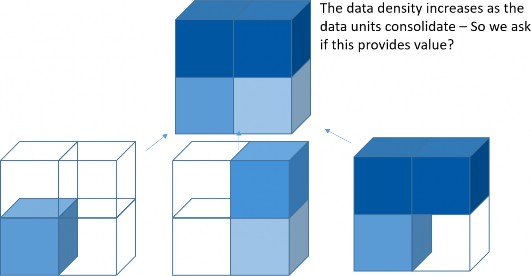
Figure 4.3 (from the OneStream Foundation Handbook, page 66)
In the example above, each cube represents a Data Unit. The three base units are not completely full for every possible intersection. Because they do not have overlap, the Data Unit for the parent entity is completely full and would perform the slowest. So, we ask ourselves here if there is anything to be gained by aggregating the detail to that parent Data Unit. Can we get the same reports from the child Data Units?
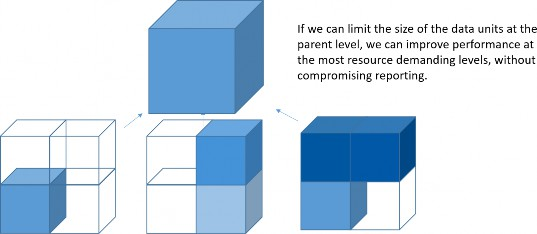
Figure 4.4 (from the OneStream Foundation Handbook, page 67)
With many members in UD, there is an opportunity for invalid data cells to get populated. This could be from poorly written rules that allowed for the population of those members or allowing end-users to load zeros. By limiting the available cells by base cube, you can minimize this risk.
Typical symptoms of application design problems, or memory configuration problems, are almost certainly due to a server that is too busy swapping Data Units in and out of memory. Customers may – at times – attempt to stop or “kill” a running report by ending the execution of the client, restarting the client, and launching another report. This action, however, does not stop the server from pursuing its query but instead results in an even longer queue of activity requested of the already overloaded OneStream server.
Another reason to use extensibility is that it allows for flexibility by giving a way to add dimensions or new members more easily without impacting the entire user base. You must remember that changing the dimensions on the cube will require dropping the tables for the cube and creating a complete rebuild. This is especially problematic if the data is Actuals, as all the history of loading and Workflow sign-off could be lost. This would mean the data will likely need to be reconciled all over again, and this will require some significant re-work.
Metadata Management › Data Units and the Importance of Extensibility › Usage › Cube Options
What Makes an Application Large?
People may be concerned about how big their application is getting, with all the Cubes and tables, so I want to give some context. Each option below has a cost and benefit.
Look for Data Units that exceed 1 million records. While OneStream can handle much higher volumes than this, these are large enough to warrant inspection and review of the design.
More cubes could create integration points but – as per our example – is likely the best design.
More dimensions – less is better where possible, but you should consider ensuring that reporting requirements are met.
The database structure depends on a client’s reporting / analytical needs.
Some guidelines for numbers of members are as follows:
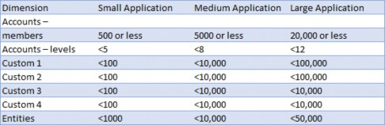
Figure 4.5 (from the OneStream Foundation Handbook, page 64)
Metadata Management
Configuring Cubes
This section covers how to configure cubes with your desired dimensions. OneStream is strict in what it allows you to do once data is loaded, in order to prevent accidental damage to your data integrity. Because of this, it’s important to sort out metadata early in the build to avoid running into roadblocks down the line. In the following sections, we explain what behaviors are allowed and what workarounds are available if you do happen to find yourself “stuck” due to the current configuration.
Metadata Management › Configuring Cubes
Setting Default Cube Dimensions
In OneStream, your data model is defined by the metadata assigned to the cube. One way to think about metadata grouping is that members are grouped into dimensions, and dimensions are grouped together into cubes.
When assigning dimensions to a cube, you can assign different dimensions to the same cube depending on the Scenario Type. For example, you might assign Accounts_Actual to the Account dimension for the Actual Scenario Type and assign Accounts_Plan to the Account dimension for the Plan Scenario Type, as shown in the figure below. This feature of OneStream is the basis for extensibility.
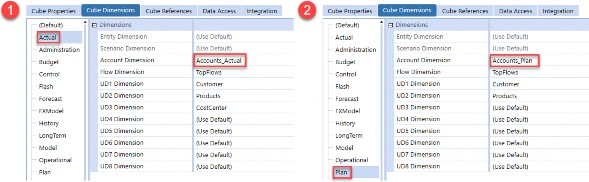
Figure 4.6
Whatever dimensions you assign to the Default Scenario Type will flow down to all other Scenario Types unless you override those dimensions explicitly on those Scenario Types. While you can technically assign any dimension on Default, good practice is generally to assign only the entity and scenario and leave all other dimensions as root, as shown below. This will give you the most flexibility in the future.
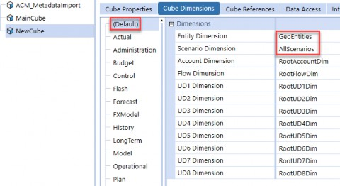
Figure 4.7
To understand why this is, let’s cover what happens if you instead choose to assign a dimension to the Default Scenario Type. In this case, as soon as you load data to the cube, OneStream will no longer allow you to change a dimension on the Default Scenario Type; this is to protect you from orphaning data. For example, if I wanted to change the Entity dimension from GeoEntities to LegalEntities, OneStream would throw the error shown in Figure 4.8. To bypass this error, your only option would be to wipe all data from the cube before reassigning dimensions.
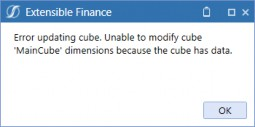
Figure 4.8
As a caveat, OneStream will technically allow you to change dimensions on the Default Scenario Type even when there is data loaded, but only if the dimension is originally root. However, this again is not recommended, as the change will then flow to all other Scenario Types.
You will have more options for adjustment in the future if you assign dimensions on specific
Scenario Types instead. We’ll discuss this further in the following sections.
Metadata Management › Configuring Cubes
Changing Dimensions on a Cube
Suppose you want to change the UD3 Dimension for the Actual Scenario Type from CostCenter to Function, as shown below.
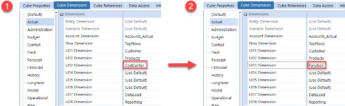
Figure 4.9
OneStream would allow this, provided there is no data in this cube stored for this specific Scenario Type. If there is data, then you will see the following error. In this case, your only option would be to wipe all data from the Actual Scenario Type for this cube, though you wouldn’t have to clear data from any of the other Scenario Types.
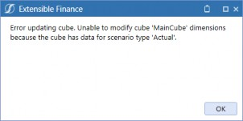
Figure 4.10
Let’s cover two edge cases. First, if a dimension was originally set as (Use Default) and the Default Scenario Type was set to root, OneStream will still prevent you from updating that dimension – you would see the same error as above. Second, if you had assigned the dimension as Root on the Actual Scenario Type when first setting up the Cube, then OneStream would allow you to update the dimension even after data is loaded to a scenario with the Actual Scenario Type.
Metadata Management › Configuring Cubes
Disabling Dimensions on a Cube
To disable a dimension for a Scenario Type, navigate to the Integration tab on your cube settings, then set the Enabled field to False for the desired dimension. This is typically done when setting up a new cube. By disabling a dimension here, OneStream will not require you to specify transformations for the UD3 dimension; all data will instead be loaded to None by default.
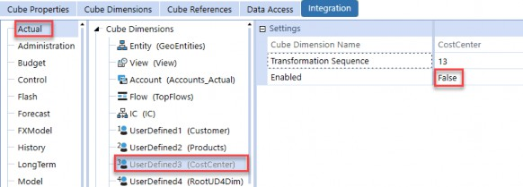
Figure 4.11
Technically, OneStream will allow you to disable a dimension on the Integration tab after data is loaded, although this is not common. However, doing so does not delete pre-existing data from these intersections, nor does this make these intersections invalid for this Scenario Type.
If you want to truly make all UD3 intersections invalid, then you will have to clear data from the Scenario Type and set the dimension to Root on the Cube Dimensions tab. There are some other methods for constraining data, but this section specifies how to handle this purely by configuring your cube.
Metadata Management
Dimension Member Management
This section covers how to modify member metadata and lays out the restrictions you must be aware of when doing so.
Metadata Management › Dimension Member Management
Creating and Cloning Members
The Design and Reference Guide provides a detailed description of all the properties that you can set on members. However, OneStream has a lot of settings, and it can be difficult to parse which settings are the most important. With that in mind, we figured it would be helpful to compile a list of the properties you should always spot-check whenever you create or clone members. These are the properties that have the potential to create huge headaches for you when troubleshooting if set incorrectly and are easy to gloss over (especially when cloning members).
Metadata Management › Dimension Member Management › Creating and Cloning Members
Entities
Here are the properties you’ll want to review. For more details on these settings, refer to the section entitled Consolidation Settings.
Is Consolidated: Check that this isn’t unintentionally set to False. If it is set to False, then the values for this entity will not roll up to its parent when a consolidation is triggered, which will obviously affect the top entity total.
Percent Consolidation: This setting is in the Relationship Properties tab. If this is set to 0, then even if the entity’s Is Consolidated setting is set to True, the values for this entity will not roll up to its parent.
Also, note that an entity can have different Percent Consolidation values for each of the hierarchies it is in, so you’ll have to check this if you ever add an entity into an alternate hierarchy. It’s common to copy an entity from a non-consolidating hierarchy and paste it into a consolidating hierarchy, whilst forgetting to update the Percent Consolidation to a non-zero value in the consolidating hierarchy.
Metadata Management › Dimension Member Management › Creating and Cloning Members
Scenarios
Here are the properties you’ll want to review:
Scenario Type: The first thing you will want to check (as most rules in the system will key off Scenario Type). It’s common to clone a scenario and leave it as the incorrect type.
Workflow Tracking Frequency and Input Frequency: If these are set incorrectly, data cannot be loaded or entered to certain periods. For more details, check the OneStream Design and Reference Guide and Chapter 9 of this book – Constraining and Locking Data – where we cover this in more detail.
Number of No Input Periods Per Workflow Unit: Technically, this doesn’t constrain data from being entered outright or calculated to these periods. However, you’ll want to check this setting for plan and forecast scenarios since this property is often referenced in business rules and NoInput rules to prevent data from being entered into Actual periods. (For example, you might see a NoInput rule which prevents input into the first three periods of a 3+9 forecast, with the three periods being specified in the no input periods).
No Data Zero View: This controls how OneStream will derive values when it finds a period with NoData. If set incorrectly, income statement accounts might aggregate through a year incorrectly. See Chapter 7 on Data Troubleshooting for more details.
Clear Calculated Data During Calc: This is True by default and should almost always be left as True. If this is set to False, data will not clear during the Data Unit Calculation Sequence, likely leading to an accumulation of stale data and a debugging nightmare.
Metadata Management › Dimension Member Management › Creating and Cloning Members
Accounts
Here are the properties you’ll want to review:
Account Type: The most important setting for financial accounts. Setting this to Asset or Liability will flag the account as a balance sheet account, while setting it to Revenue or Expense will flag the account as an income statement account. This will affect how this account aggregates, translates, and more. See Section: Common Setting Interactions and Errors for more details.
If the account is a non-stored dynamically calculated member, then this should be set to DynamicCalc. Forgetting to do this will result in the dynamic calculation not running in Cube Views, with OneStream treating it as a stored member instead.
Formula Type: For stored Member Formulas, this should be set to a formula pass.
For dynamically calculated members, this must be set to DynamicCalc (along with the account type). A common mistake is to set DynamicCalc on only one of account type or formula type but forget the other.
Is Consolidated: If it is set to False, then even if a base entity has values for this account, you will not see values for this account at the parent entity. This can mislead you into thinking your consolidation isn’t working.
By default, this is set to Conditional (True if no Formula Type (default)). A common mistake is to leave this as default when making an account a stored member with an attached Member Formula. In this case, the formula would run and calculate the value at the base entity, but the value won’t be consolidated up to the parent entity. If the amount should be consolidated, then this must be set manually to True.
Aggregation Weight: This setting is in the Relationship Properties tab. If this is set to 0, the values for this account will not aggregate up to its parent. An account can have different aggregation weight values for each of the hierarchies it is in, so you’ll have to check this if you ever add an account to an alternate hierarchy.
Metadata Management › Dimension Member Management › Creating and Cloning Members
Flows
Here are the properties you’ll want to review:
Switch Sign and Switch Type: These settings work in conjunction with account settings. We shall discuss this further later in this chapter.
Formula Type: See the description in the Accounts properties section above.
Is Consolidated: See the description in the Accounts properties section above.
Aggregation Weight: See the description in the Accounts properties section above.
Metadata Management › Dimension Member Management › Creating and Cloning Members
UD Members
Here are the properties you’ll want to review:
Formula Type: See the description in the Accounts properties section above.
Is Consolidated: See the description in the Accounts properties section above.
Aggregation Weight: See the description in the Accounts properties section above.
Metadata Management › Dimension Member Management
Renaming Members
OneStream allows you to rename a member, even if data is loaded to it. In the OneStream database, records stored to that member will now reference the new name, so you lose no data by renaming members. However, a catch is that hardcoded references to the member in Cube Views, transformation rules, dashboards, and business rules will not get updated and must be updated manually.
A constraint to keep in mind is that member names must be unique within a given dimension type. For example, you cannot create a member named Cash in both the Accounts_Plan and Accounts_Actual dimensions since they are both Account dimensions. You could, however, create a member named Top in each of your dimension types, since there would only be one Top member for each type.
Metadata Management › Dimension Member Management
Deleting Members
OneStream does not allow you to delete members that have data loaded to them. If you attempt to do so, you’ll see the following error. The only way to get around this is to clear all data from this member and then try again.
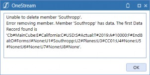
Figure 4.12
Metadata Management › Dimension Member Management
Orphaning Members
Whenever you create a member, you must specify its parent. Even if you create a member and place it in no hierarchy, OneStream, by default, will place the member as a child of the root member in a given dimension type.
If you remove all of a member’s relationships so that it has no parent(s) (not even root), then that member becomes orphaned and will appear in the Orphans dropdown in a dimension.
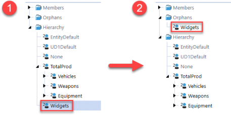
Figure 4.13
If this happens, data can still be loaded to this member, but its values will not be aggregated up to any parents. Furthermore, the member will not appear anywhere in the application. For example, if you tried to search for Widgets in the UD2 hierarchy, OneStream would show zero results.
Typically, members end up orphaned when metadata is loaded and relationships are unintentionally dropped. However, orphaning a member, while not recommended, can be an alternative to deleting it since this avoids clearing all of the member’s data.
Metadata Management › Dimension Member Management
Moving Members Across Dimensions
OneStream does not allow you to move members between dimensions by default, nor does it allow you to create a member with the same name in a different dimension (within the same dimension type). However, there are a couple of common workarounds.
Metadata Management › Dimension Member Management › Moving Members Across Dimensions
How to Move a Base Member
To move a base non-entity member, your first thought might be to delete the member and recreate it in the new dimension. However, this would require you to wipe the member’s data first. If you want to retain this data, then a common workaround is to rename the member first and then create a new member. For example, suppose you want to move the Widgets member from SubProducts to Products.
Rename
WidgetstoWidgets_Oldin theSubProductsdimension.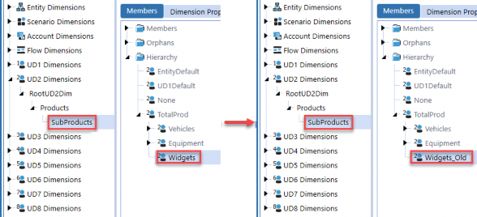
Figure 4.14
Create a new member named
Widgetsin the new dimension.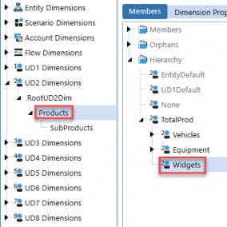
Figure 4.15
Create a business rule to copy data from
Widgets_OldtoWidgets.You can then either orphan
Widgets_Oldor write an ad hoc business rule to wipe data fromWidgets_Oldbefore deleting it.
Metadata Management › Dimension Member Management › Moving Members Across Dimensions
How to Move a Parent Member
Unlike base members, non-entity parent members do not have data stored to them directly in the database, and so can be deleted more easily. However, OneStream prevents you from deleting members with children, even if the children are in an extended dimension. If you try, you get the following error:
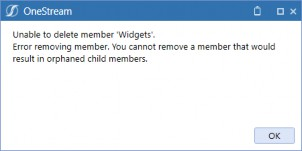
Figure 4.16
To get around this, you can orphan the child members first, and then delete the member before recreating it in the new dimension. For example, suppose you want to move Widgets down a level from Products to SubProducts.
First, orphan the children of
Widgetsby removing their relationships toWidget.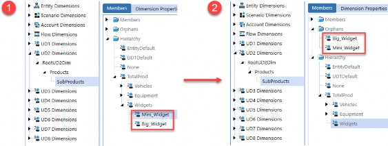
Figure 4.17
Delete
Widgetsin theProductsdimension (i.e., the parent dimension).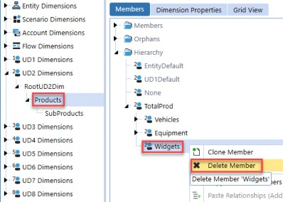
Figure 4.18
Recreate
Widgetsin theSubProductsdimension (i.e., the child dimension), and then add back the child relationships ofWidgets. The data forBig_WidgetandMini_Widgetwill now roll up toWidgetsautomatically, as with any other aggregation.
You can see here that Widgets is now black in the SubProducts dimension, which indicates that it is a member of SubProducts and is not inherited from Products.
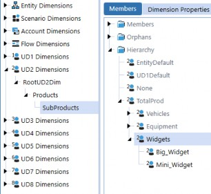
Figure 4.19
Metadata Management
Common Setting Interactions
No setting in OneStream functions in isolation. To get your desired behavior, you will almost always need to use a combination of settings, which are often spread across many screens. In this section, we discuss common use cases and group the settings that work together to affect your desired behavior.
Metadata Management › Common Setting Interactions
Consolidation Settings
Consolidation settings are spread across different members, all of which affect how data is consolidated. For values to be consolidated up from base entities, the following settings must be configured as follows:
Entity Is Consolidated property must be set to True.
Entity Percent Consolidation property must be some non-zero value for the entity hierarchy that is being consolidated.
Account Is Consolidated property must resolve to True.
Flow Is Consolidated property must resolve to True.
UD members’ (UD1-UD8) Is Consolidated property resolves to True.
| Note: For non-Data Unit dimensions (Account, Flow, and UD), the Is Consolidated property is set to Conditional (True if no Formula Type (default)) by default. If your member is flagged as a stored Member Formula, then you must explicitly set this property to True; otherwise, the member will not be consolidated. |
This covers just the baseline settings for values to be consolidated. For more details on how to control and customize consolidation behavior (e.g., you might want to have your consolidation take intercompany eliminations into account), refer to Chapter 4 on consolidation in the OneStream Foundation Handbook.
Metadata Management › Common Setting Interactions
Account Setting Interactions
This section covers how different settings interact to control how accounts are aggregated, translated, and derived.
Metadata Management › Common Setting Interactions › Account Setting Interactions
Account Type and Aggregations
When OneStream aggregates base account members to parent account members, it automatically accomplishes this based on account type. We call this financial intelligence.
To illustrate this, consider the following example in the screenshot below. In the database, Revenue (which has an account type of revenue) is stored as 100, while COS (which has an account type of expense) is stored as 20. When OneStream aggregates to the parent GrossMargin, OneStream will subtract COS from Revenue.
This means OneStream recommends you do not store book values in the database. You can allow OneStream’s financial intelligence to take care of this for you. Providing a trial balance report with book signs (revenues and liabilities/equity in credits) can easily be accomplished in a Cube View.
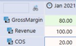
Figure 4.20
A quick tip is that if you would like to see your expense accounts as negative in your reporting, you can use the Cell Format field in your Cube View Properties to control how values are displayed based on the account type, or use a dynamic reporting member which flips signage, depending on the account type.
Metadata Management › Common Setting Interactions › Account Setting Interactions
Account Type and View (YTD versus Periodic)
The account type controls how data is retrieved and stored in conjunction with views.
Metadata Management › Common Setting Interactions › Account Setting Interactions › Account Type and View (YTD versus Periodic)
Read
From a system perspective, OneStream only stores YTD amounts in the database. When you query intersections using other views like Periodic, MTD, or QTD, OneStream will derive the correct amount based on the YTD amount; the Account Type setting affects how these alternate views are derived.
For balance sheet accounts where Account Type is set to Asset or Liabilities, periodic amounts are simply derived as the same as the YTD amount. For example, if you load $100 to YTD for M1, then the M1 periodic value will be derived as $100.
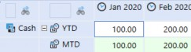
Figure 4.21
For income statement accounts where Account Type is set to Revenue or Expense, periodic amounts are computed as activity by subtracting the prior month and current month’s YTD amount. For example, if you load $100 to YTD for M1, and $150 to YTD for M2, then the M2 periodic amount will be derived as $50.
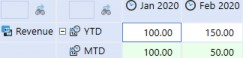
Figure 4.22
Metadata Management › Common Setting Interactions › Account Setting Interactions › Account Type and View (YTD versus Periodic)
Write
In addition, when you input or calculate to periodic, OneStream will derive the YTD value to store, based on the account type.
For balance sheet accounts where Account Type is set to Asset or Liabilities, if you input to periodic, then OneStream will store that amount as the YTD amount in the database.
For income statement accounts where account type is set to revenue or expense, if you input to periodic, then OneStream will sum the entered periodic amount to the prior month’s YTD amount to get the YTD amount to store for the current month.
| Note: This is the default behavior of these account types. You can override this behavior, causing balance sheet accounts to behave like income statement accounts and vice versa by using the switch type setting on a Flow member. |
Metadata Management › Common Setting Interactions › Account Setting Interactions
Account Type and FX Rate Type
US GAAP specifies that balance sheet accounts must be translated using closing rates, while income statement accounts must be translated at average rates. To accommodate this, OneStream lets you specify direct FX rates (for assets and liabilities) and periodic FX rates (for revenues and expenses) on the Cube Properties tab on each cube. By default, balance sheet accounts are translated using the direct method, while income statement accounts are translated using the periodic method.
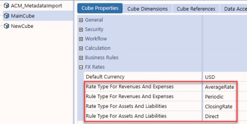
Figure 4.23
You can also override these rates on the Member Properties tab of each scenario.
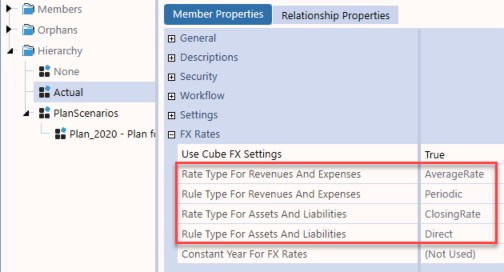
Figure 4.24
For more details on the OneStream translation algorithm and settings, refer to Chapter 5: Translation.
| Note: This section references US GAAP, but keep in mind that GAAP and IFRS allow the direct method to be used for income statement accounts. |
Metadata Management › Common Setting Interactions › Account Setting Interactions
Scenario and Account NoDataView Settings
When you load data to a period and the next period has no data, OneStream must determine how to interpret that no data period. There are four main settings that control this behavior:
Scenario No Data Zero View for Adjustments and No Data Zero View for NonAdjustments
properties.
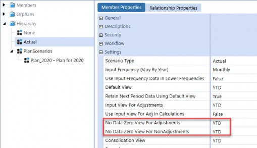
Figure 4.25
Account No Data Zero View for Adjustments and No Data Zero View for NonAdjustments
properties.
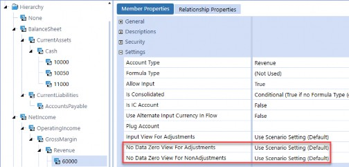
Figure 4.26
You can think of the scenario NoDataView settings as the global setting. By default, accounts will use the scenario setting, but you can override the NoDataView settings on each specific account, though this is generally not recommended as it can complicate troubleshooting.
If you set a NoDataView property to YTD, then OneStream considers NoData to mean that the YTD amount for that month is 0. For balance sheet accounts – where YTD and periodic amounts are the same – this is intuitive. For income statement accounts, OneStream will store a YTD value of 0 to the database and derive the periodic amount for the month to cancel out the previous month’s YTD amount.
For example, consider the following example in the screenshot below. Here, suppose that the NoDataView for the Adjustments scenario property is set to YTD. For the balance sheet cash account, OneStream derives the M2 YTD amount as 0, and the periodic amount reflects this. For the income statement revenue account, OneStream again derives the M2 YTD amount as 0, but must derive the periodic amount to be -$100 to cancel out the M1 $100 YTD amount.
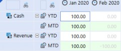
Figure 4.27
If you set a NoDataView property to Periodic, then OneStream considers NoData to mean that the periodic amount for that month is 0. Again, for balance sheet accounts where YTD and periodic amounts are the same, this doesn’t really matter. For income statement accounts, because you are writing to the periodic view, OneStream will derive the YTD amount to store as the prior month’s YTD amount summed with the assumed 0 periodic amount for the current month.
For example, consider the following example in the screenshot below. The data in M1 is the same as in the previous example, but this time, the NoDataView for the Adjustments scenario property is set to periodic. For the income statement revenue account, OneStream assumes that the M2 Periodic amount is 0. It then derives the M2 YTD amount to be $100 (the prior month’s YTD amount + this assumed $0), which gives $100. In other words, OneStream has assumed no activity and carried the prior month’s YTD balance forward.
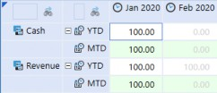
Figure 4.28
Metadata Management › Common Setting Interactions › Account Setting Interactions
Account Type and Flow Switch Settings
Metadata Management › Common Setting Interactions › Account Setting Interactions › Account Type and Flow Switch Settings
Switch Sign
As discussed in the section on account type and aggregations, OneStream will automatically apply financial intelligence so that asset and revenue accounts are treated as positive, and liability and expense accounts are treated as negative during aggregations to parents as well as calculations. If you set a Flow’s Switch Sign property to True, OneStream will leave the account type alone, but will override the sign of the current account during aggregations and calculations.
To illustrate this, consider the following example in the screenshot below. Suppose we’ve set the SwitchSign Flow member’s Switch Sign property to True. OneStream will now flip the sign of the expense account to be -$20, and then subtract that amount from the Revenue amount of $100 to get $120.
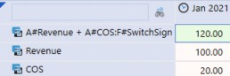
Figure 4.29
This can be useful in combination with the Flow’s Aggregation Weight property for cash flow calculations and aggregations.
Metadata Management › Common Setting Interactions › Account Setting Interactions › Account Type and Flow Switch Settings
Switch Type
As discussed in the Account Type and View section, balance sheet accounts are treated as YTD accounts, while income statement accounts are treated as periodic accounts. This means that the periodic amounts for balance sheet accounts will be the same as the YTD amounts, whereas the periodic amounts for income statement accounts reflect that period’s activity. If you set a Flow’s Switch Type property to True, then for that Flow member, this behavior is reversed: balance sheet accounts will instead be treated as periodic accounts and income statement accounts will be treated as YTD accounts.
Using this property changes how account/flow combinations behave and are translated, as discussed in the Account Type and FX Rate Type section, as well as how NoData cells are derived, as discussed in the Scenario and Account NoDataView Settings section.
This is particularly useful for cash flow calculations, where you want to treat balance sheet account activity as periodic instead of YTD. See the Cash Flow section in the Consolidation chapter of the OneStream Foundation Handbook for more details.
Metadata Management › Common Setting Interactions
Member Calculation Settings
Metadata Management › Common Setting Interactions › Member Calculation Settings
Stored Member Formula
Here are the properties that must be configured on a stored Member Formula. Formulas for stored Member Formulas are subs and do not expect any return objects but contain api.Data.Calculate and api.Data.SetDataBuffer calls to calculate cells and store them in the database.
Account Type (Account Members only): This property is only present on accounts and not on UDs. Members with stored Member Formulas can hold data, and so their account type should reflect the correct financial account type to ensure that they aggregate up to their parent accounts correctly.
Formula Type: For stored Member Formulas, this should be set to a formula pass. This controls the order that this Member Formula will execute, relative to other Member Formulas.
Is Consolidated: Again, it’s important that if you want the calculated member to consolidate, this must be set to True.
Formula: Business rule containing
api.Data.Calculateand
api.Data.SetDataBuffer calls to calculate and save data to the database.
Formula for Calculation Drill Down: Business rule containing logic to populate drill down results on cells generated.
The following screenshot shows sample settings for an account with a stored Member Formula.
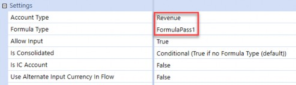
Figure 4.30
Something else to keep in mind is that stored Member Formulas will use the active scenario’s
Default View property when calculating, if you do not explicitly specify the view member.
Metadata Management › Common Setting Interactions › Member Calculation Settings
Dynamic Calculation
Here are the properties that must be configured on a DynamicCalc member. Formulas for a DynamicCalc must return a DataCell object from a GetDataCell call; this cell is what is displayed in your Cube Views.
Account Type (Account Members only): Set to
DynamicCalc. Forgetting to do this will result in the dynamic calculation not running in Cube Views.Formula Type: Set to
DynamicCalc.Formula: Business rule containing
api.Data.GetDataCellcall.Formula for Calculation Drill Down: Business rule containing logic to populate drill down results on the returned cell.
The following screenshot shows sample settings for a DynamicCalc member.
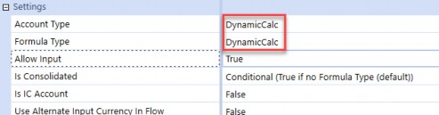
Figure 4.31
Metadata Management
Alternate Hierarchies
Alternate hierarchies are extremely flexible, powerful tools within OneStream. This section covers how to create them, as well as two common situations where you might want to leverage them.
Metadata Management › Alternate Hierarchies
How to Create Alternate Hierarchies
Creating alternate hierarchies is simple. The idea is that you can share a member across multiple hierarchies. For example, suppose you want to build out a CorporateReporting hierarchy in your Entity dimension.
Add child members to CorporateReporting by copying them and pasting them under Corporate Reporting. These child members now belong to both the NA and Corporate Reporting hierarchies.
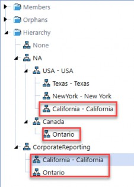
Figure 4.32
| Note: Make sure to use the Paste Relationships (Add) option, instead of the Paste Relationships (Move) option. |
Review the Percent Consolidation property for entities and the aggregation weight property for non-Data Unit dimensions like Account or Flow to ensure that your child members will roll up to the parent as expected.
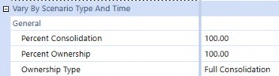
Figure 4.33
Metadata Management › Alternate Hierarchies
Use Case 1: Alternate Reporting Structures
There are many ways to get alternate reporting in OneStream. For example, suppose you have alternate GAAP and non-GAAP corporate account structures that you need to support. Let’s discuss three different approaches and explain why alternate hierarchies is the cleanest option.
Metadata Management › Alternate Hierarchies › Use Case 1: Alternate Reporting Structures
Cube View Math
One approach is to do this purely in Cube Views using Cube View math. This would mean cherry-picking accounts one by one, and then using a combination of CVR and CVC functions and GetDataCell calls to manually sum accounts and create your report lines.
While this would work, it quickly becomes difficult to maintain and troubleshoot since you end up with a mess of function calls that you can only see by clicking into each row in the Cube View designer. If you’ve been working with OneStream for any amount of time, there’s a fair chance you’ve run into Cube Views that look something like this, where you have a large number of rows that each have a single cherry-picked account, and rows that have CVR functions to add up each row.
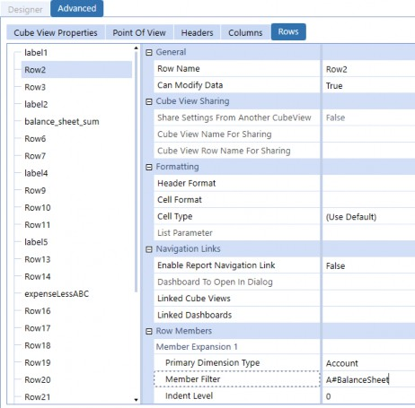
Figure 4.34
On top of how difficult the Cube View is to build and maintain, this approach is generally not recommended since hardcoding accounts means that any changes to your metadata structures will not get reflected in your Cube Views, and you’ll have to update these Cube Views manually. Since you could be responsible for hundreds of Cube Views, there’s a good chance that one of these changes will get missed, and you’ll only find out when users are putting in tickets complaining that reports – which worked a week ago – are not working anymore!
Metadata Management › Alternate Hierarchies › Use Case 1: Alternate Reporting Structures
Dynamic Reporting Members
Another way to do this would be to create DynamicCalc reporting members in your Account dimension to represent each of your account roll-ups, and then reference these dynamic members in your Cube View. This approach suffers from the same issues as the previous approach, as you’ll have to manually update the business rules driving these DynamicCalc formulas manually if any of your members change.
Metadata Management › Alternate Hierarchies › Use Case 1: Alternate Reporting Structures
Alternate Hierarchies
As a general principle, OneStream best practice is to enforce metadata-driven design: this means designing your system to be driven dynamically by your metadata as much as possible. Alternate hierarchies are a perfect example of this, since changes in your metadata automatically flow into your report. For example, imagine if the previous Cube View looked like this instead… much better.
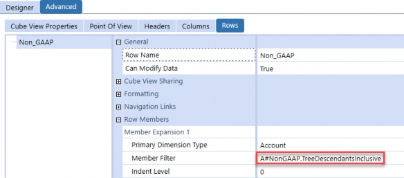
Figure 4.35
Now, if any members are changed, the Cube View will automatically update to allow you to see the updated hierarchy – no changes needed. This also leverages OneStream’s built-in aggregation logic so that you can see your parent account values without updating any CVR math. Another advantage is that if you need to maintain this structure, you can simply go to the Account dimension and see the structure in its entirety.
Metadata Management › Alternate Hierarchies
Use Case 2: Grouping Members for Business Rules
Again, whenever possible, you want your metadata to drive your application. For example, suppose you have a business rule that allocates to a subset of your capital expense accounts.
You could hardcode these accounts in your business rule, but another approach would be to create a structure that reflects this business use case directly in your account structure.
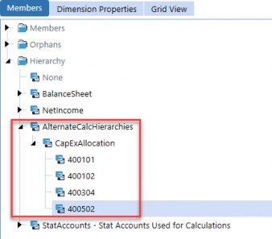
Figure 4.36
Now your rule could reference the CapExAllocation hierarchy, looping through the member list defined by A#CapExAllocation.Base. If you’re doing a percentage of the total, this makes it easy since you can simply do something like A#400101/A#CapExAllocation.
Metadata Management
Text Fields
This section covers two use cases for the Text Field properties on members (i.e., Text 1 – Text 8). Similar to alternate hierarchies, text fields are a great example of metadata-driven design. The biggest advantage to text fields is that you can do maintenance directly on members and have those changes dynamically affect business rules, reports, and other objects that reference these fields.
Metadata Management › Text Fields
How to Reference Text Fields
Before going over use cases, let’s quickly cover how you can reference text fields in different locations in your application. Hopefully, this might give you some ideas on where you might use text fields in your application.
Metadata Management › Text Fields › How to Reference Text Fields
Member Filters
Text fields can be referenced in Member Filter expansions, specifically in Where clauses, to restrict your resulting member list. This can be used anywhere you use a Member Filter, from Cube Views to Member Filter arguments in business rules. For more details, see the section on Member Expansions in the OneStream Design and Reference Guide.
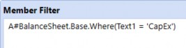
Figure 4.37
Note: OneStream expects a space before and after the OneStream doesn’t return anything. |
Metadata Management › Text Fields › How to Reference Text Fields
Member Text Properties in Business Rules
There are two main method calls to get the text field value of a member:
If you are in a finance business rule, the recommended way is to use the finance
apiobject directly:
api.Account.Text(ByVal MemberId As Integer, ByVal textPropertyIndex As Integer, Optional ByVal varyByScenarioType As Integer, Optional ByVal varyByTimeId As Integer
If you are not in a finance business rule, then you’ll have to invoke the
BRApi.Finance
namespace:
BRApi.Finance.Account.Text(ByVal si As SessionInfo, ByVal MemberId As Integer, ByVal textPropertyIndex As Integer, ByVal varyByScenarioType As Integer, ByVal varyByTimeId As Integer)
Note: We use the Account class here, but you will need to use different API calls depending on the dimension type of the member you’re trying to query (e.g., api.Entity.Text). |
Here is an example of how it is used in a business rule.
Dim accText1 As String = api.Account.Text(api.Pov.Account.MemberId, 1)
While not necessary, if you are planning on referencing a text field in a business rule, it’s recommended to add your text fields in a NameValuePair format (with key-value pairs being delimited by commas, and keys and values separated by =). Here’s an example of what this format would look like in a text field.
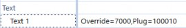
Figure 4.38
This has a few distinct advantages:
It allows you to use a single text field for storing multiple values. Keep in mind, though, that you should still use different text fields for different use cases (it’s not a good idea to jam all of your values into a single text field, even if you can).
It makes parsing values out of the text field simpler and easier to read in business rules.
It gives context as to what the text field is being used for.
In your business rule, you can then parse this text field using the OneStream API without doing any convoluted string parsing.
Dim accNVBuilder As New NameValueFormatBuilder(api.Account.Text(api.Pov.Account.MemberId, 1))
Dim accOverride As String = accNVBuilder.NameValuePairs.XFGetValue(“Override”) Dim accPlug As String = accNVBuilder.NameValuePairs.XFGetValue(“Plug”)Metadata Management › Text Fields › How to Reference Text Fields
Workflow Text Properties in Business Rules
Although this section is mainly focused on setting Text 1 fields on members, Workflow Profiles also have four text fields that can be referenced in business rules.
There are two main method calls to get the text field value of a Workflow:
If you are in a finance business rule, the easiest way is to use
apidirectly:
api.Workflow.GetWFText1()
If you are not in a finance business rule, it is slightly more complicated. Here is an example:
Dim wfText1 As String = BRApi.Workflow.Metadata.GetProfile(si, “profileName”).GetAttributeValue(ScenarioTypeID.Actual, SharedConstants.WorkflowProfileAttributeIndexes.Text1)
Note: If you want to get different text fields, you must change the WorkflowProfileAttributeIndex. Also, notice that because Workflow Profile text fields are assigned by Scenario Type, you must specify the ScenarioTypeID in the arguments. |
Metadata Management › Text Fields
Use Case 1: Reporting
You can use text fields to dynamically pull a set of members in a Cube View. For example, you might want a report that displays all of your capital expense accounts. Instead of hardcoding each account in your Cube View rows, you can use a single Member Filter expansion to pull all accounts that have a Text 1 field value that equals CapEx. This is an alternative to using alternate hierarchies, and might be more appropriate if you don’t need members to aggregate to a parent.
This is a good approach since all of your maintenance lies in your metadata and not in your Cube View. If you want to flag a new account as a capital expense account, you only have to add CapEx to its Text 1 field.
Metadata Management › Text Fields
Use Case 2: Calculations
You can use text fields whenever you 1. want to limit calculations to run on specific members, or 2. want your calculations to do specific things to members based on their text field values.
Metadata Management › Text Fields › Use Case 2: Calculations
Specify Forecast Methodologies
Suppose your business would like to plan accounts using different methodologies.
To accommodate this, you can assign each subset of accounts a dedicated Text field value which specifies their calculation methodologies, as shown in the table below.
| Text Field | Calculation |
|---|---|
| StraightLine | Calculate next period based on constant growth rate. |
| MovingAvg | Calculate next period as prior period multiplied by 5-year average YoY growth. |
| LinRegression | Calculate next period with statistical voodoo magic. |
Figure 4.39
Your business rule could then be partitioned out to execute the different calculations on different member lists, which filter accounts based on the dedicated Text field.
Metadata Management › Text Fields › Use Case 2: Calculations
Cash Flow Mappings
Suppose you have your rollforward hierarchy in your Flow dimension, but you need to map these rollforward members into your cash flow hierarchy in a dedicated UD dimension.
To accommodate this, you can assign each rollforward Flow member a dedicated Text field value which specifies which cash flow member it should be allocated to. The advantage of this approach is that the Flow member and its target are contained together; if a Flow member must be remapped, then you only have to modify that specific member’s Text field. It’s also simple to create a report that lists all of the mappings.
While you could maintain this mapping in the cash flow rule directly, it is not as intuitive, as you would have to remember where this mapping is defined in the business rule. In general, a good guiding principle is to keep as much maintenance outside business rules as possible.
For more details on actually implementing a cash flow design, refer to the OneStream Foundation Handbook.
Metadata Management › Text Fields › Use Case 2: Calculations
Limit Planned Depreciation Amounts
Suppose you are planning your depreciation expenses. From an accounting perspective, it doesn’t make sense for these depreciation expenses to exceed their corresponding assets. Because of this, your users might make a request to modify your plan calculations to respect this constraint.
To handle this, you can link each depreciation account to its corresponding asset account by adding the asset account to one of the Text fields available on the depreciation account. In your rule, you can then add a condition to limit the value of a depreciation account to not exceed the value of the asset account in its designated Text field.
Metadata Management
Metadata Management Controls
Metadata is the foundation of your application; it drives reporting, data loads, and almost every other aspect of your system. This is why metadata control management is key for our internal and external auditing partners.
If your business is at the end of its implementation, or is several years into a mature application, it is expected to have multiple controls and practices concerning the management of metadata. This section highlights how OneStream can help automate or facilitate standards to achieve this goal.
Metadata Management › Metadata Management Controls
Suggested Processes and Controls
OneStream offers the ability to do detailed reporting and help with audits around metadata. This section will help the company with auditing controls and reporting against changes.
Metadata Management › Metadata Management Controls › Suggested Processes and Controls
Audits
Whether a company is a private company or a publicly traded company, there will be some type of auditing standards required against metadata and the management of metadata. OneStream does a great job of tracking and tracing all the changes to metadata (and other parts of the application).
OneStream has standard audit tables that have no impact on existing performance; they are standard with the OneStream application and not something that can be turned on or off. Each section of the application has its own audit table. For dimensions, there is an audit table that tracks the changes. This table is called AuditDim.
Though OneStream can’t define a process for a company, it can assist in transitioning its old auditing processes to be comparable within OneStream. These processes could be the actual movement of metadata, the tracking of changes, or even month end close. The most common audit practices track the approval of specific metadata changes related to sensitive financial information. However, there are outliers to this that want approval for every type of change for all dimensions. Also, typically during the monthly closing cycle, a company will have documentation to prove that approvals and changes align.
Metadata Management › Metadata Management Controls › Suggested Processes and Controls
Metadata Reports
OneStream offers a variety of detailed metadata reports. The most commonly used are the Application Reports. As you can see from the screenshot from our GolfStream demo application (Figure 4.40), Application Reports offer three metadata reporting options.
The reports in the Metadata Analysis group offer some detail about orphaned members, the numbers of members for a parent, and cube maintenance details for 30 days. The Orphaned
Members report becomes particularly useful if you have a member you can’t seem to find in the hierarchy. This report will tell you which members are currently sitting as orphaned (and a company should really determine if they should exist as orphans). Usually, OneStream recommends a very limited number of orphaned metadata. There are some use cases that could be needed or warranted.
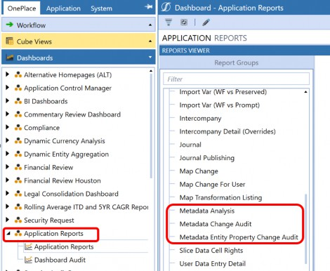
Figure 4.40
The Metadata Change Audit group contains the key reports for the company’s auditing partners. As one can see from the screenshot in Figure 4.41, these reports offer a variety of functionality around changes and are intended to work in conjunction with each other to provide a complete change history of a member.
The Member Changes Audit will allow an admin to know that something has changed.
The Member Formula Changes Audit report will allow an admin to know when specific formulas have been altered on the metadata member.
The Member Changes Detail report will list any changes that occurred on the metadata member.
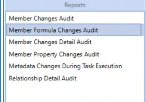
Figure 4.41
Finally, the reports in the Metadata Entity Property Change group will show any changes – adds, updates or removals – to entity structures, although these reports will not show any changes to the actual properties on the Member Properties tab.
Metadata Management › Metadata Management Controls › Suggested Processes and Controls
Change Requests
Once an application is stable and metadata is not changing regularly, businesses often want to implement a system that allows users to submit metadata change requests.
One option to handle these types of requests is to implement the Help Desk, which can be found in the OneStream MarketPlace. This provides an out-of-the-box solution where users can submit change requests as tickets, which can go through an approval workflow. This also provides an audit trail on approved and rejected metadata changes.
Metadata Management › Metadata Management Controls
Automation
Every OneStream administrator should want the system to be as automated as the company will allow it to be. This enhances not only system usage but allows the admin to have time to do other meaningful tasks (rather than focusing on mundane system moves). Application Control Manager or ACM can be found in the MarketPlace for OneStream. ACM is designed to support and manage user change requests for both security and metadata. Though ACM has a significant amount of configuration at the start, the long-run benefit is a truly automated function for metadata. At a high level, the end-user can request a new account, a different user can approve the account, and finally – upon approval – the account will be created in the correct hierarchy. Having this type of construct in place will make all auditing partners happy by having full traceability from request to approval and finally to creation.
Metadata Management
Conclusion
OneStream as a tool is extremely flexible, but that comes with a trade-off, as there are countless ways to approach problems and business needs. OneStream has thousands of settings, and it might seem overwhelming to figure out which settings interact and in what ways, especially if you’re only just getting introduced to the software. We hope this chapter will provide that context for you and make your life a little easier when managing metadata and maintaining your application.